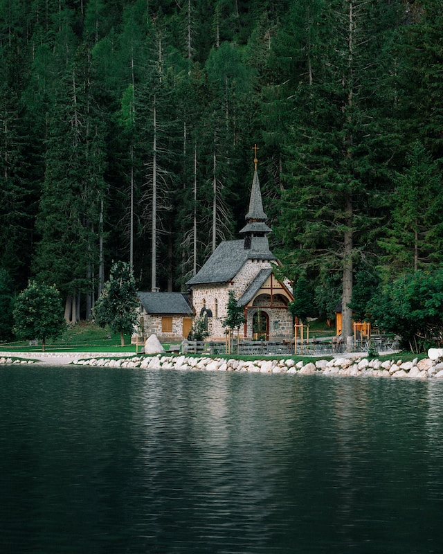

Some random information.

The Pragser Wildsee is a natural lake in the Prags Dolomites in South Tyrol, Italy.

The lake lies at the foot of the imposing rock face of the Seekofel and is located within the Fanes - Sennes - Prags nature park.
It is a barrage lake, as its creation is due to the barrage of the Prags River due to a landslide detached from the Herrstein.

The lake is surrounded on three sides by Dolomite peaks, including the Seekofel.